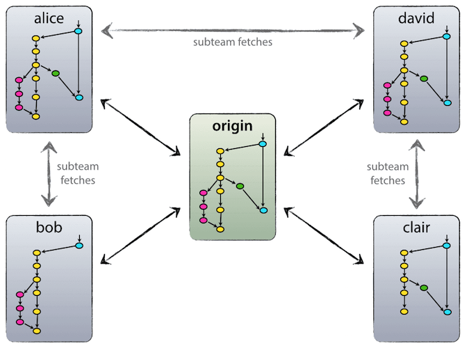
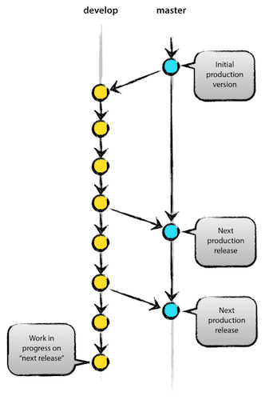
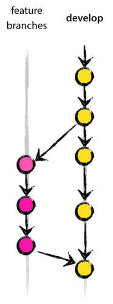
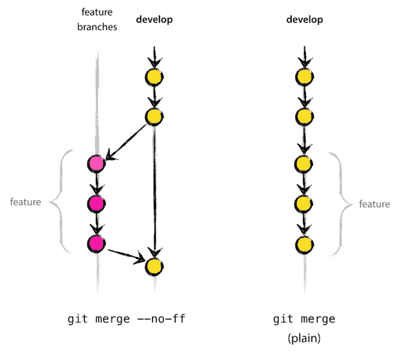
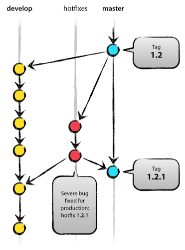

git-flow
Entwicklungshilfe
entwicklungshilfe.nrw / @help_for_devs /
FB/entwicklungshilfe.nrw
Black
White
EH
Inhalt
- Warum Versionskontrolle?
- Warum git?
- Warum git-flow?
- Hands on
Warum Versionskontrolle?
- Protokollierung von Änderungen (Dokumentation)
- Vereinfacht Zusammenarbeit (Zusammenführen von Code)
- Ermöglicht das Springen in jeden beliebigen gespeicherten Stand der Entwicklung
Protokollierung von Änderungen (Dokumentation)
Vereinfacht Zusammenarbeit (Zusammenführen von Code)
- Konfliktmanagement
- Zeitliche Darstellung
- Codeänderung kommentiert
- im Idealfall zu einem Ticket zugehörig
Ermöglicht das Springen in jeden beliebigen gespeicherten Stand der Entwicklung
Warum git?
- Einfach
- Sparsam und schnell
- Verteilt
Einfach
- Einfache Installation
- Wenige Kommandos von Nöten
- Kein komplexer Unterbau
Sparsam und schnell
Verteilt
Bei git ist zunächst jede Code-Anpassung lokal. Erst durch einen Commit wird sie der Versionsverwaltung mitgeteilt, durch einen Push dem globalen Repository zur Verfügung gestellt
Workflow einer Datei
- Neue Datei
- git add
- git commit
- git push
Warum git-flow?
- Einheitlicher Worklflow
- Berücksichtigt tatsächlichen Lebenszyklus
- Skalierbar an Projektgröße
Workflow im git-flow
Hauptzweige (main branches)
- master (production-ready)
- develop (integration branch)
Hauptzweige (main branches)
Unterstützungszweige (supporting branches)
- release (bug fixing, feature freeze)
- feature (one! feature)
- hotfix
Unterstützungszweige (supporting branches)
Das --no-ff flag
Hotfix
Hands on
Voraussetzungen
- git installiert?
- gitignore/gitconfig?
- Internetverbindung?
- Fragen?
Hands on
gitignore
/Users/superdev/.gitignore_global oder __PROJECTROOT__/.gitignore
/.idea /app/etc/* !/app/etc/config.php /dev/tools/* !/dev/tools/grunt /dev/tools/grunt/* !/dev/tools/grunt/configs /dev/tools/grunt/configs/* !/dev/tools/grunt/configs/themes.js
Auszug .gitignore magento2 Projekt
Hands on
git config
/etc/gitconfig oder ~/.gitconfig
[user]
name = Super Developer
email = awesome@developer.dev
[core]
excludesfile = /Users/superdev/.gitignore_global
autocrlf = input
[difftool "sourcetree"]
cmd = opendiff \"$LOCAL\" \"$REMOTE\"
path =
[mergetool "sourcetree"]
cmd = /Applications/SourceTree.app/Contents/Resources/opendiff-w.sh \"$LOCAL\" \"$REMOTE\" -ancestor \"$BASE\" -merge \"$MERGED\"
trustExitCode = true
Beispiel Mac OS X
Hands on
git-flow
- git-flow installieren
wget -q – http://github.com/nvie/gitflow/raw/develop/contrib/gitflow-installer.sh –no-check-certificate sudo chmod a+x gitflow-installer.sh sudo ./gitflow-installer.sh
Hands on
Sample: Github
- git clone https://github.com/Entwicklungshilfe-NRW/gitflowsample.git
- cd gitflowsample
- git log
- git log --graph --oneline --all
Aufgaben 1/2
Team 1
- Release starten
- Release bearbeiten
- Release schliessen
Team 2
- Feature starten
- Feature bearbeiten
- Feature schliessen
Aufgaben 2/2
- HOTFIX durchführen